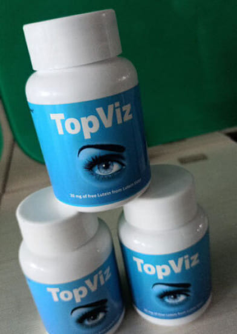

Jayshree Raghavan Patil, 35 лет
Как я вас понимаю! Сама работаю экономистом и от цифр, постоянной работы перед компьютером сильно падает зрение. К тому же сильно болит голова к концу дня от перенапряжения. Спасибо, что делитесь опытом. Заказала и с нетерпением жду заказ!!!))

Tarun Kunda, 26 лет
Я программист и в последнее время зрение начало падать очень жестко. Оставался на подработки и видимо посадил зрение окончательно. Вплоть до того, что невозможно было читать, все плыло. Мой коллега посоветовал мне капсулы TopViz, сам страдал похожей проблемой и даже носил очки. Я решил попробовать и не зря: зрение вернулось в норму, а работа по 12 часов больше не приносит дискомфорта! Советую тем, кто вынужден долго работать перед монитором!

Mowgli Dev Lall, 20 лет
А у меня зрение с детства не очень. Много играю, целыми ночами за ноутом, мама ругается. Я могу купить это средство и восстановить зрение?
Tarun Kunda
Конечно! Капсулы восстанавливают зрение вне зависимости от того, когда оно начало садится…вчера или 10 лет назад. У меня с этим препаратом даже дед зрение восстановил, хотя всю сознательную жизнь ходил в очках как крот.

Alpa Kala, 42 года
У меня плохое зрение уже много лет, - 6,50 и видит только один глаз. Иногда я думала, смогу ли я прожить всю жизнь вот так…неполноценно. Я пианистка и музыка - моя радость, а я даже не могла смотреть в ноты. Моя бывшая ученица, видя мою печаль, подарила мне эти капсулы и сказала пропить курс. Прошло 10 недель и я снова могу играть, представляете? Зрение стало лучше, сейчас -1,00 и для меня это победа. Я годами мучилась, а решение было так рядом. Я благодарна моей прекрасной Абхе за возможность видеть прекрасное и жить полноценной жизнью!

Neha Sawhney, 50 лет
Я тоже работаю за компьютером! Мое зрение тоже начало падать из-за этого, хотя у меня самый новый монитор, и производитель обещал, что из-за него не может быть проблем со зрением. Уже начала думать о лазерной коррекции, но хорошо, что вовремя нашла этот блог! Заказала курс лечения на 2 месяца и жду, когда придет моя посылка!🔥

Emran Rao De, 32 года
Я ношу очки с 5 класса школы и у меня близорукость. Работаю за компьютером по 5-9 часов в сутки. На сегодня по зрению у меня -6, понимаю, что так жить больше не хочу. Очень боюсь делать операцию, начитался негативных отзывов…Мне помогут эти капсулы???

Sid Dev Chakraborty, 60 лет
Emran, здравствуйте! Как врач, заверяю вас, что вашу проблему можно решить и без операции. Около сотни моих пациентов пропили курс капсул TopViz и полностью восстановили зрение. И что главное - в отличие от аптечных химических препаратов Topviz не оказывает негативного воздействия на сердце и другие органы.
Emran Rao De
Спасибо доктор! Я уже не надеялся вернуть зрение🤝🏼

Monica Biren Kakar
Доктор, подскажите, а смогут ли капсулы восстановить зрение пожилому человеку? И еще: если у меня генетическая предрасположенность могу пропить для профилактики?🤔
Sid Dev Chakraborty, 60 лет
Безусловно! Капсулы нормализуют зрение вне зависимости от возраста и степени запущенности процессов. Противопоказаний нет, препарат абсолютно безопасен и продается без рецепта.
Pooja Yash Shah, 40 лет
Мне посоветовала эти капсулы окулист и пропив полный курс я забыла о своей близорукости! Так просто и безопасно вернуть зрение я и не мечтала. Даже моя бабушка, видя как я сняла очки без операции, решила попробовать. Уже спустя 4 недели она начала видеть намного четче.
Navami Parsa, 46 лет
Скажите, а эффект сохраняется после того как пропили полный курс? Или вы продолжаете принимать капсулы для поддержания эффекта?
ответ Pooja Yash Shah
Вот уже 3 месяца не принимаю капсулы и вижу прекрасно. Зрение в норме, и мушки перед глазами больше не беспокоят.
ответ Pooja Yash Shah
Вот уже 3 месяца не принимаю капсулы и вижу прекрасно. Зрение в норме, и мушки перед глазами больше не беспокоят.
Navami Parsa
И я заказала. Себе и маме. Чудесно, что препарат работает в любом возрасте😊😊😊

Sharad Srinivas
Меня в школе всегда дразнили очкариком, я просто не снимал очки, они со мной всегда. Однажды пробовал перейти на линзы в подростковом возрасте, но в ночном клубе (наверно от едкого дыма) линза лопнула и вызвала дикую боль и травму глаза. После этого носил только очки. Моя мама медик и с одной из зарубежных конференций привезла мне эти капсулы. Я ничего не терял и решил попробовать… Результат шокировал даже моего лечащего врача. Зрение за 4 недели с -3,00 стало -0,5! Я продолжаю пить капсулы и чувствую себя суперменом. Снял очки и увидел как девчонки на меня стали заглядываться, а подруга сказала, что у меня красивые глаза…)))
Nupoor Banik
Как здорово! Я сама очкарик с самого детства и прекрасно понимаю твое состояние. После того как с помощью капсул TopViz улучшила зрение с -4,00 до -1,00 стала гораздо увереннее в себе, не боюсь знакомиться с людьми. А недавно даже дала интервью по телевизору, хотя всегда боялась внимания))
Zara Parvez Palla. 63 года
Милые мои, это просто чудо препарат!👍 Чего я только за свои 63 года не перепробовала: и капли, и таблетки, и операция… даже если и был эффект, то он быстро проходил. С капсулами TopViz совсем другая история. Прошло уже более 3-х месяцев как я закончила курс и выпила последнюю капсулу. Мое зрение с -7,00 стало 100%, я вижу все четко, глаза не болят, очки не нужны и даже чувствую себя моложе. Просто потрясающее! Всем рекомендую!!!
Jagruti Radheshyam Dani, 70 лет
В нашем возрасте обязательно нужно пропивать подобные препараты. Мой сосед рекомендовал мне, он у нас ученый в области офтальмологии. Говорит, что сосуды и мышцы слабые и их нужно укреплять. Посоветовал эти капсулы и я теперь не нарадуюсь. Вижу четко улыбки своих внуков, их красивые рисунки и первые буквы. Я счастливая бабуля!!! И все благодаря этим капсулам)))
Mahmood Singh Walla
Друзья мои, это счастье, что в Индии появился официальный представитель данного препарата. Раньше я заказывал его для своих пациентов из соседней страны, но сейчас поставки там расписаны на год вперед. Рекомендую, результаты просто потрясающие. У каждого все проходит индивидуально, но восстанавливается зрение в 99% случаев.


Mini Goda, 55 лет
Я педагог со стажем 30 лет и проверка тетрадей, в последние 10 лет, для меня мука. От постоянного перенапряжения сильно упало зрение. Всегда было хорошее, а сейчас -3,00. Коллега порекомендовала эти капсулы, говорит просто чудесные и быстро помогают. Буду пробовать и обязательно поделюсь результатами))
Sneha Chia, 58 лет
Сочувствую, коллега! Сама учитель старших классов и понимаю вас. Раньше проверка пачек тетрадей для моих глаз было просто невыносимым испытанием, а сейчас все гораздо лучше. Пропила курс капсул TopViz и больше не испытываю дискомфорта. Нет боли на переносице, глаза не пекут, а от очков я вообще отказалась. Дети делают комплименты, говорят помолодела. Ааа, кстати, мое зрение вернулось в норму, окулист даже решила, что я сделала операцию😆
Mini Goda
Как чудесно! Спасибо за совет! Я уже заказала и себе, и супругу. У него после стресса начало падать зрение.
Mitesh Bala, 51 год
Всем привет! Поделюсь своей историей. Я сварщик и на работе привык работать без маски, неудобно одевать из-за очков для зрения. Очень часто ловил “зайчиков”, это когда глаза начинают сильно печь и кажется будто яркие вспышки летают перед глазами. Жена закапывала глаза каплями и становилось чуть лучше, но это сильно сказалось на зрении…оно упало до -7,00! Перепробовал все, что можно - эффекта не было. Тогда попалась статья об этих капсулах в интернете и я без промедления заказал. Приехал заказ быстро, я оплатил курьеру и начал курс. Прошло 5 недель и я вижу, как зрение возвращается!))) Я работаю в сварочной маске без очков и прекрасно вижу! Все лучше и лучше с каждой неделей. СОВЕТУЮ ОДНОЗНАЧНО!

Meghana Darpan Khosla, 40 лет
Спасибо, что поделились! У меня у мужа подобная проблема, хоть увольняйся. Будем пробовать. И сама пропью для профилактики. Можно ведь?
Mitesh Bala, 51 год
Конечно! У меня супруга пропивала курс. Глаза теперь гораздо меньше устают и четкость картинки лучше)) Я сам хирург, зрение для меня очень важный момент. На операции в очках работать неудобно, а снять их просто нет возможности. После того, как пропил курс капсул TopViz работаю без очков и вижу отлично!